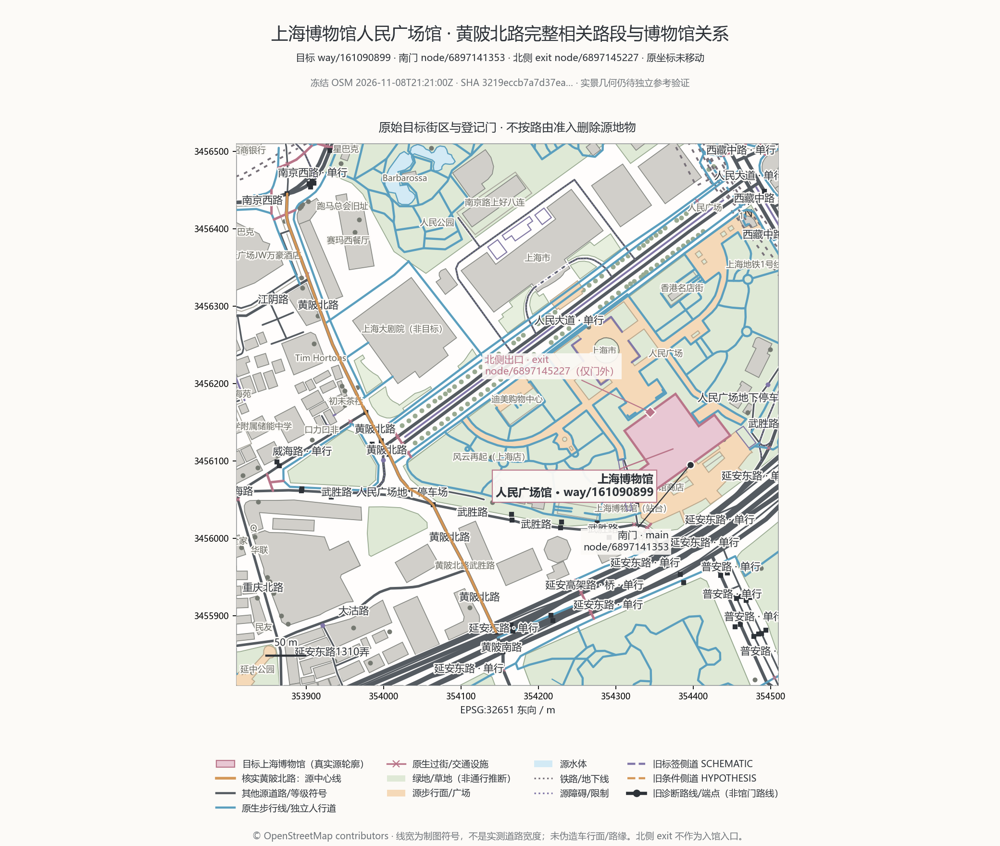
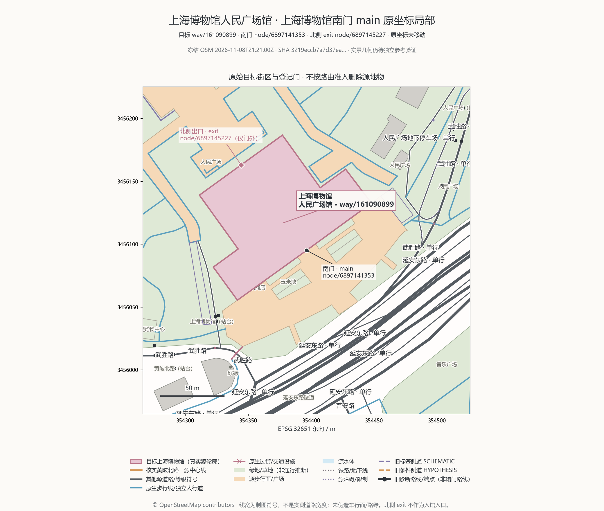
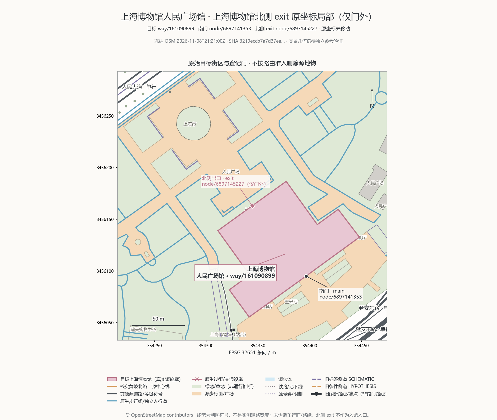
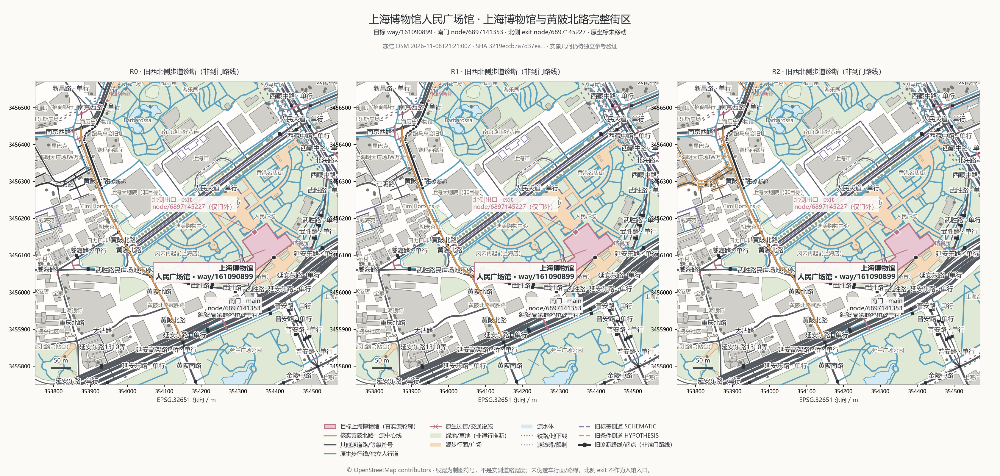
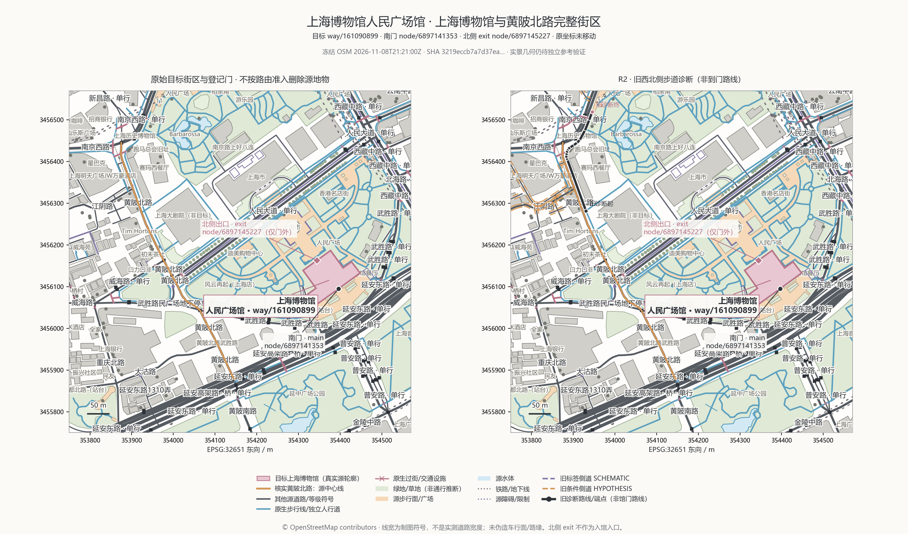

目标 way/161090899 · 南门 main / 北侧 exit（仅门外） · 原门未移动 · 道路中心线符号不代表路宽
A · 目标街区原始上下文
上海博物馆玫瑰色边界、原南门与北出口、黄陂北路金色实线均来自原生源对象。
目标图形与门点按原始坐标显示；原生地物不按路由准入过滤。
R0 · 原道路轴诊断
旧西北步道诊断的原始位置，不改称博物馆门前路线。
R1 · 原生/侧别标签诊断
标签侧向表示仍为SCHEMATIC虚线。
R2 · 条件侧道诊断
金色虚线为条件假设；黄陂北路原生中心线是金色实线，两者身份不同。
目标博物馆原始轮廓黄陂北路原生中心线其他道路中心线原生步行线源过街/交通设施标签侧向SCHEMATIC条件侧道HYPOTHESIS旧保存诊断路线（假设段虚线）
展开图层、源数据与当前尺度
滚轮缩放、拖动平移，四视图联动。线宽只是道路等级制图符号，不是实测道路宽度；sidewalk/cycleway标签不自动生成路缘或独立车道几何。
展开目标原生身份、门坐标及审计来源
实际目标身份
上海博物馆 · way/161090899 · 原地址标签：人民大道201号。南门 node/6897141353：entrance=main；北侧 node/6897145227：entrance=exit，仅门外接近，不当作入馆入口。
目标身份审计 · 黄陂北路七段道路证据 · 现实参照边界
点选对象，核对原生身份
黄陂北路身份
当前场景、视野与旧诊断绑定
旧诊断有效记录：不等于目标门路线
| 变体 | 原尝试 | 原状态 | 当前视野诊断边 | 旧F1代理代价 |
|---|
保存结果属于原way/39764359步道诊断，端点不是本任务的南门或北出口。图面范围重建没有迁移、重算或替换旧查询。
原首跑与最终有效R0
实际源对象清单
| 源族 | 街区导出数 | 当前视野绘制数 | 源身份/缺失 |
|---|
目标锚定静态图册














